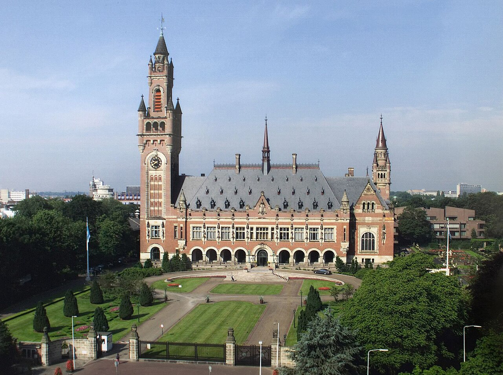
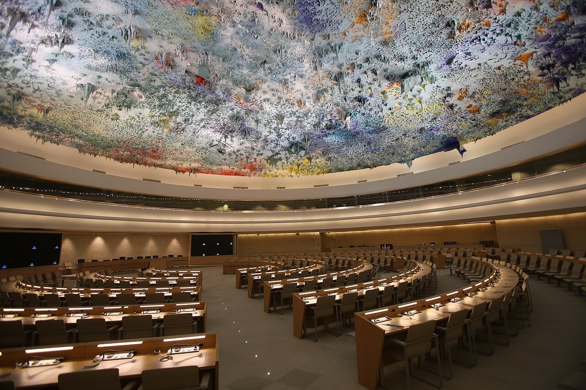

الجمعية العامة
تضم كل الدول الأعضاء؛ وهي التي اعتمدت الإعلان العالمي سنة 1948 وما تلاه من اتفاقيات، وتناقش أوضاع حقوق الإنسان وتصدر قرارات وتوصيات بشأنها.
إذا كانت الضمانات هي المبادئ التي تحمي الحقوق، فإن الآليات هي الهيئات والإجراءات العملية التي تسهر على تطبيقها: ترصد الأوضاع، وتتلقى الشكاوى، وتحاسب على الانتهاكات. وتقف الأمم المتحدة وأجهزتها في قلب هذه المنظومة.
نصّ ميثاق الأمم المتحدة (1945) على تعزيز احترام حقوق الإنسان كأحد مقاصد المنظمة. وللمنظمة ستة أجهزة رئيسية حددها الميثاق، ولكل منها دور في ذلك:
تضم كل الدول الأعضاء؛ وهي التي اعتمدت الإعلان العالمي سنة 1948 وما تلاه من اتفاقيات، وتناقش أوضاع حقوق الإنسان وتصدر قرارات وتوصيات بشأنها.
مسؤول عن حفظ السلم والأمن الدوليين؛ يتدخل عند الانتهاكات الجسيمة، وقراراته ملزمة، وقد ينشئ لجان تحقيق أو يفرض تدابير على المنتهكين.
الجهاز القضائي الرئيسي للأمم المتحدة؛ تفصل في النزاعات بين الدول، ومنها ما يتصل بتفسير اتفاقيات حقوق الإنسان وتطبيقها.
ينسّق عمل الأمم المتحدة الاقتصادي والاجتماعي، وتتبعه لجان متخصصة ذات صلة وثيقة بالحقوق، مثل لجنة وضع المرأة.
يقودها الأمين العام؛ تنفّذ ما تقرره الأجهزة الأخرى، ويلفت الأمين العام نظر العالم إلى الأزمات والانتهاكات الجسيمة.
أشرف تاريخيًا على الأقاليم المشمولة بالوصاية حتى نالت استقلالها، وقد علّق أعماله منذ سنة 1994 بعد إنجاز مهمته.
إلى جانب الأجهزة الستة، أنشأت الجمعية العامة سنة 1993 المفوضية السامية لحقوق الإنسان (مقرها جنيف، وتتبع الأمانة العامة) لتقود جهود المنظمة في هذا المجال: ترصد الأوضاع حول العالم، وتقدم الدعم التقني للدول، وتُسند عمل بقية الآليات.

الهيئة الأممية الرئيسية المتخصصة في حقوق الإنسان، وهو هيئة فرعية تابعة للجمعية العامة، أُنشئ سنة 2006 ومقره جنيف، ويتألف من 47 دولة تنتخبها الجمعية العامة. يعمل بثلاث أدوات رئيسية:
تخضع كل دولة عضو في الأمم المتحدة — دون استثناء — لمراجعة سجلها في حقوق الإنسان أمام بقية الدول مرة كل نحو أربع سنوات ونصف، وتتلقى توصيات تلتزم بمتابعتها.
خبراء مستقلون (مقررون خاصون وأفرقة عمل) يكلَّفون بموضوع محدد كالتعليم أو التعذيب، أو ببلد محدد؛ يجرون زيارات ميدانية ويرفعون تقارير علنية.
يتيح للأفراد والمنظمات لفت نظر المجلس إلى الأنماط الثابتة من الانتهاكات الجسيمة المؤيدة بأدلة موثوقة، لينظر فيها بسرية.

لكل معاهدة رئيسية لجنة من خبراء مستقلين تراقب تنفيذ الدول لالتزاماتها. وعددها عشر هيئات، وهذه قائمتها كاملة:
تراقب تنفيذ العهد الدولي الخاص بالحقوق المدنية والسياسية.
تراقب تنفيذ العهد الدولي الخاص بالحقوق الاقتصادية والاجتماعية والثقافية.
تراقب تنفيذ اتفاقية القضاء على جميع أشكال التمييز العنصري (1965).
تراقب تنفيذ اتفاقية القضاء على جميع أشكال التمييز ضد المرأة (1979).
تراقب تنفيذ اتفاقية مناهضة التعذيب (1984).
تزور أماكن الاحتجاز وقائيًا بموجب البروتوكول الاختياري لاتفاقية مناهضة التعذيب.
تراقب تنفيذ اتفاقية حقوق الطفل (1989).
تراقب تنفيذ اتفاقية حماية حقوق جميع العمال المهاجرين وأفراد أسرهم (1990).
تراقب تنفيذ اتفاقية حقوق الأشخاص ذوي الإعاقة (2006).
تراقب تنفيذ اتفاقية حماية جميع الأشخاص من الاختفاء القسري (2006).
تقدّم الدول إليها تقارير دورية عمّا أنجزته، فتناقشها اللجنة وتصدر ملاحظات ختامية بمواطن القوة والقصور وتوصيات للتحسين. كما يمكن لبعضها تلقّي بلاغات من الأفراد الذين يرون أن دولتهم انتهكت حقوقهم، متى قبلت الدولة ذلك واستنفد المشتكي سبل الإنصاف المحلية.
على اختلاف هذه الآليات، تشترك في دورة عمل واحدة تقريبًا:
1
من تقارير الدول والزيارات الميدانية وشكاوى الأفراد ومنظمات المجتمع المدني.
2
مناقشة الدولة المعنية علنًا، وإصدار توصيات وملاحظات محددة قابلة للمتابعة.
3
متابعة تنفيذ التوصيات في الدورات اللاحقة، وتقديم مساعدة تقنية للدول لتطوير قوانينها ومؤسساتها.
4
نشر التقارير والنتائج ليطّلع عليها العالم؛ فالرأي العام الدولي نفسه وسيلة ضغط لحماية الحقوق.
هذه الآليات لا تحل محل الضمانات الوطنية، بل تسندها: فحين يعجز القضاء الوطني أو تقصّر الدولة، يبقى للمجتمع الدولي عين ترصد وصوت يحاسب.